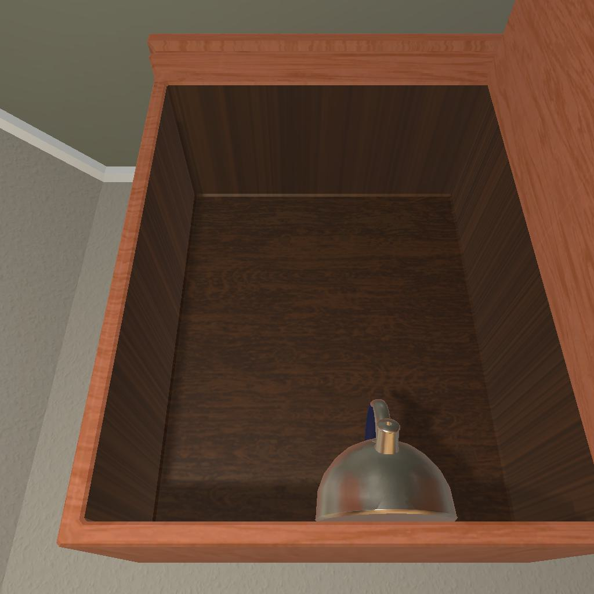

---------------------------------------------------------task: 15---------------------------------------------------------
--------------------------------------------------------------------------------------------------------------------------------------------------------------------
--------------------------------------------------------------------------------------------------------------------------------------------------------------------
Step:--------------------------------------------------------------------------11-------------------------------------------------------------------------------
----------------------------------------
VLM Prompt:
Image1:
Image2:
Image3:
**Instruction**
1. Analyze the provided images to identify all visible household objects and compare the difference between images (e.h. whether the object is opened or not and taken on hand or not), focusing on those relevant to the task description "put a cool mug in coffeemachine."
2. Use the analysis of images and the task hint "The agent must find an object of the desired type, pick it up, go to a fridge, cool the object with the fridge, then find the correct location to place it, and put it down there. The agent does not need to use the fridge button or open the fridge to cool the object, and the agent just needs to do action that is "cool the object with the fridge"." to answer the question: what is the most reasonable action in the choices for the task description "put a cool mug in coffeemachine"?
3. Decide and write the answer using the template: The answer is: (i): , where i is the real number. If there is no desired object in images, search every place based on **Initial Observation** to find the object. And if no one is exactly correct, choose a similar answer.
**Initial Observation**
You are in the middle of a room. Looking quickly around you, you can see cabinet (1-15), fridge (1), countertop (1-4), drawer (1-4), microwave (1), toaster (1), coffeemachine (1), garbagecan (1), sink (1), stoveburner (1-3), sinkbasin (1)
**Answer Choices**
(1): go to cabinet 2
(2): go to cabinet 3
(3): go to countertop 1
(4): go to cabinet 4
(5): go to cabinet 5
(6): go to cabinet 6
(7): go to cabinet 7
(8): go to drawer 1
(9): go to drawer 2
(10): go to cabinet 8
(11): go to drawer 3
(12): go to cabinet 9
(13): go to cabinet 10
(14): go to drawer 4
(15): go to microwave 1
(16): go to cabinet 11
(17): go to toaster 1
(18): go to cabinet 12
(19): go to cabinet 13
(20): go to cabinet 14
(21): go to cabinet 15
(22): go to countertop 2
(23): go to coffeemachine 1
(24): go to garbagecan 1
(25): go to countertop 3
(26): go to countertop 4
(27): go to sink 1
(28): go to stoveburner 1
(29): go to stoveburner 2
(30): go to stoveburner 3
(31): go to sinkbasin 1
(32): open fridge 1
(33): close fridge 1
(34): examine fridge 1
**Answer**
Let's think step by step by following the instructions.
----------------------------------------
----------------------------------------
Original Response:
The analysis of the provided images does not show any visible mugs or coffee machines. The images focus on a ceiling with some photos attached and what appears to be the upper corner of a room with a cabinet and a bell-shaped object, possibly a light fixture or a decoration.
Since the task description "put a cool mug in coffeemachine" implies that the agent needs to find a mug, cool it with the fridge (without the need to use the fridge button or open the fridge), and then put it in the coffee machine, the most reasonable action would be to find a mug first. Based on the **Initial Observation** list provided, mugs are not specifically listed but are commonly found in cabinets or on countertops near a coffee machine.
Given the answer choices, none explicitly mention finding a mug, but the most logical places to look for a mug based on common household organization would be in a cabinet or on a countertop. Since countertops are more open and easier to search quickly, it would be reasonable to start there.
The answer is: (22): go to countertop 2.
----------------------------------------
----------------------------------------
>>> Refine Original VLM Response and Get Pure Action: go to countertop 2
----------------------------------------
-----------------------------------------------------------------
Running time: 78.720543384552 seconds
Total Money: 8.781500000000007
-----------------------------------------------------------------
-----------------------------------------------------------------
Text Observation:You arrive at loc 23. On the countertop 2, you see a mug 1, and a saltshaker 2.
-----------------------------------------------------------------
UNSUCCEED